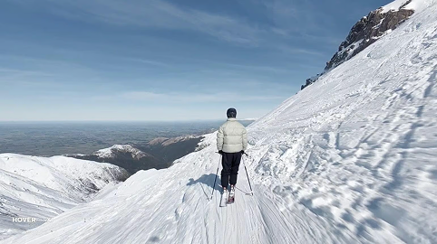
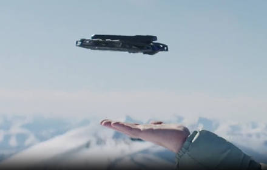

პროფესიონალური დონის განახლებები
HOVERAir X1 და PRO HOVERAir X! PROMAX საუკეთესო ფლანგებია უკვე გამოცდილი X1 სერიის საფუძველზე. გაახლებბეი მოიცავს პროფესიონალური დონის კამერის სპეციფიკაციებსა და მოქმედებებზე ორიენტირებულ ფუნქციებს.

HOVERAir X1 და PRO HOVERAir X! PROMAX საუკეთესო ფლანგებია უკვე გამოცდილი X1 სერიის საფუძველზე. გაახლებბეი მოიცავს პროფესიონალური დონის კამერის სპეციფიკაციებსა და მოქმედებებზე ორიენტირებულ ფუნქციებს.
HOVERAir X1 და PRO HOVERAir X! PROMAX საუკეთესო ფლანგებია უკვე გამოცდილი X1 სერიის საფუძველზე. გაახლებბეი მოიცავს პროფესიონალური დონის კამერის სპეციფიკაციებსა და მოქმედებებზე ორიენტირებულ ფუნქციებს.
დააწკაპუნეთ ქვემოთ მოცემულ ჩანართზე, რომ გაიგო მეტი
